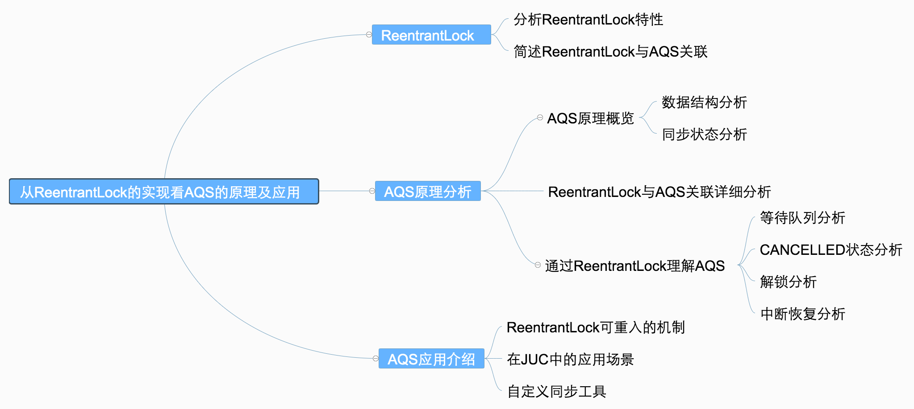

- AQS 万字图文全面解析.md.html
- Docker 镜像构建原理及源码分析.md.html
- ElasticSearch 小白从入门到精通.md.html
- JVM CPU Profiler技术原理及源码深度解析.md.html
- JVM 垃圾收集器.md.html
- JVM 面试的 30 个知识点.md.html
- Java IO 体系、线程模型大总结.md.html
- Java NIO浅析.md.html
- Java 面试题集锦（网络篇）.md.html
- Java-直接内存 DirectMemory 详解.md.html
- Java中9种常见的CMS GC问题分析与解决（上）.md.html
- Java中9种常见的CMS GC问题分析与解决（下）.md.html
- Java中的SPI.md.html
- Java中的ThreadLocal.md.html
- Java线程池实现原理及其在美团业务中的实践.md.html
- Java魔法类：Unsafe应用解析.md.html
- Kafka 源码阅读笔记.md.html
- Kafka、ActiveMQ、RabbitMQ、RocketMQ 区别以及高可用原理.md.html
- MySQL · 引擎特性 · InnoDB Buffer Pool.md.html
- MySQL · 引擎特性 · InnoDB IO子系统.md.html
- MySQL · 引擎特性 · InnoDB 事务系统.md.html
- MySQL · 引擎特性 · InnoDB 同步机制.md.html
- MySQL · 引擎特性 · InnoDB 数据页解析.md.html
- MySQL · 引擎特性 · InnoDB崩溃恢复.md.html
- MySQL · 引擎特性 · 临时表那些事儿.md.html
- MySQL 主从复制 半同步复制.md.html
- MySQL 主从复制 基于GTID复制.md.html
- MySQL 主从复制.md.html
- MySQL 事务日志(redo log和undo log).md.html
- MySQL 亿级别数据迁移实战代码分享.md.html
- MySQL 从一条数据说起-InnoDB行存储数据结构.md.html
- MySQL 地基基础：事务和锁的面纱.md.html
- MySQL 地基基础：数据字典.md.html
- MySQL 地基基础：数据库字符集.md.html
- MySQL 性能优化：碎片整理.md.html
- MySQL 故障诊断：一个 ALTER TALBE 执行了很久，你慌不慌？.md.html
- MySQL 故障诊断：如何在日志中轻松定位大事务.md.html
- MySQL 故障诊断：教你快速定位加锁的 SQL.md.html
- MySQL 日志详解.md.html
- MySQL 的半同步是什么？.md.html
- MySQL中的事务和MVCC.md.html
- MySQL事务_事务隔离级别详解.md.html
- MySQL优化：优化 select count().md.html
- MySQL共享锁、排他锁、悲观锁、乐观锁.md.html
- MySQL的MVCC（多版本并发控制）.md.html
- QingStor 对象存储架构设计及最佳实践.md.html
- RocketMQ 面试题集锦.md.html
- SnowFlake 雪花算法生成分布式 ID.md.html
- Spring Boot 2.x 结合 k8s 实现分布式微服务架构.md.html
- Spring Boot 教程：如何开发一个 starter.md.html
- Spring MVC 原理.md.html
- Spring MyBatis和Spring整合的奥秘.md.html
- Spring 帮助你更好的理解Spring循环依赖.md.html
- Spring 循环依赖及解决方式.md.html
- Spring中眼花缭乱的BeanDefinition.md.html
- Vert.x 基础入门.md.html
- eBay 的 Elasticsearch 性能调优实践.md.html
- 不可不说的Java“锁”事.md.html
- 互联网并发限流实战.md.html
- 从ReentrantLock的实现看AQS的原理及应用.md.html
- 从SpringCloud开始，聊微服务架构.md.html
- 全面了解 JDK 线程池实现原理.md.html
- 分布式一致性理论与算法.md.html
- 分布式一致性算法 Raft.md.html
- 分布式唯一 ID 解析.md.html
- 分布式链路追踪：集群管理设计.md.html
- 动态代理种类及原理，你知道多少？.md.html
- 响应式架构与 RxJava 在有赞零售的实践.md.html
- 大数据算法——布隆过滤器.md.html
- 如何优雅地记录操作日志？.md.html
- 如何设计一个亿级消息量的 IM 系统.md.html
- 异步网络模型.md.html
- 当我们在讨论CQRS时，我们在讨论些神马？.md.html
- 彻底理解 MySQL 的索引机制.md.html
- 最全的 116 道 Redis 面试题解答.md.html
- 有赞权限系统(SAM).md.html
- 有赞零售中台建设方法的探索与实践.md.html
- 服务注册与发现原理剖析（Eureka、Zookeeper、Nacos）.md.html
- 深入浅出Cache.md.html
- 深入理解 MySQL 底层实现.md.html
- 漫画讲解 git rebase VS git merge.md.html
- 生成浏览器唯一稳定 ID 的探索.md.html
- 缓存 如何保证缓存与数据库的双写一致性？.md.html
- 网易严选怎么做全链路监控的？.md.html
- 美团万亿级 KV 存储架构与实践.md.html
- 美团点评Kubernetes集群管理实践.md.html
- 美团百亿规模API网关服务Shepherd的设计与实现.md.html
- 解读《阿里巴巴 Java 开发手册》背后的思考.md.html
- 认识 MySQL 和 Redis 的数据一致性问题.md.html
- 进阶：Dockerfile 高阶使用指南及镜像优化.md.html
- 铁总在用的高性能分布式缓存计算框架 Geode.md.html
- 阿里云PolarDB及其共享存储PolarFS技术实现分析（上）.md.html
- 阿里云PolarDB及其共享存储PolarFS技术实现分析（下）.md.html
- 面试最常被问的 Java 后端题.md.html
- 领域驱动设计在互联网业务开发中的实践.md.html
- 领域驱动设计的菱形对称架构.md.html
- 高效构建 Docker 镜像的最佳实践.md.html
从ReentrantLock的实现看AQS的原理及应用
前言
Java中的大部分同步类（Lock、Semaphore、ReentrantLock等）都是基于AbstractQueuedSynchronizer（简称为AQS）实现的。AQS是一种提供了原子式管理同步状态、阻塞和唤醒线程功能以及队列模型的简单框架。本文会从应用层逐渐深入到原理层，并通过ReentrantLock的基本特性和ReentrantLock与AQS的关联，来深入解读AQS相关独占锁的知识点，同时采取问答的模式来帮助大家理解AQS。由于篇幅原因，本篇文章主要阐述AQS中独占锁的逻辑和Sync Queue，不讲述包含共享锁和Condition Queue的部分（本篇文章核心为AQS原理剖析，只是简单介绍了ReentrantLock，感兴趣同学可以阅读一下ReentrantLock的源码）。
下面列出本篇文章的大纲和思路，以便于大家更好地理解：

1 ReentrantLock
1.1 ReentrantLock特性概览
ReentrantLock意思为可重入锁，指的是一个线程能够对一个临界资源重复加锁。为了帮助大家更好地理解ReentrantLock的特性，我们先将ReentrantLock跟常用的Synchronized进行比较，其特性如下（蓝色部分为本篇文章主要剖析的点）：

下面通过伪代码，进行更加直观的比较：
// **************************Synchronized的使用方式**************************
// 1.用于代码块
synchronized (this) {}
// 2.用于对象
synchronized (object) {}
// 3.用于方法
public synchronized void test () {}
// 4.可重入
for (int i = 0; i < 100; i++) {
synchronized (this) {}
}
// **************************ReentrantLock的使用方式**************************
public void test () throw Exception {
// 1.初始化选择公平锁、非公平锁
ReentrantLock lock = new ReentrantLock(true);
// 2.可用于代码块
lock.lock();
try {
try {
// 3.支持多种加锁方式，比较灵活; 具有可重入特性
if(lock.tryLock(100, TimeUnit.MILLISECONDS)){ }
} finally {
// 4.手动释放锁
lock.unlock()
}
} finally {
lock.unlock();
}
}
1.2 ReentrantLock与AQS的关联
通过上文我们已经了解，ReentrantLock支持公平锁和非公平锁（关于公平锁和非公平锁的原理分析，可参考《不可不说的Java“锁”事》），并且ReentrantLock的底层就是由AQS来实现的。那么ReentrantLock是如何通过公平锁和非公平锁与AQS关联起来呢？ 我们着重从这两者的加锁过程来理解一下它们与AQS之间的关系（加锁过程中与AQS的关联比较明显，解锁流程后续会介绍）。
非公平锁源码中的加锁流程如下：
// java.util.concurrent.locks.ReentrantLock#NonfairSync
// 非公平锁
static final class NonfairSync extends Sync {
...
final void lock() {
if (compareAndSetState(0, 1))
setExclusiveOwnerThread(Thread.currentThread());
else
acquire(1);
}
...
}
这块代码的含义为：
- 若通过CAS设置变量State（同步状态）成功，也就是获取锁成功，则将当前线程设置为独占线程。
- 若通过CAS设置变量State（同步状态）失败，也就是获取锁失败，则进入Acquire方法进行后续处理。
第一步很好理解，但第二步获取锁失败后，后续的处理策略是怎么样的呢？这块可能会有以下思考：
- 某个线程获取锁失败的后续流程是什么呢？有以下两种可能：
(1) 将当前线程获锁结果设置为失败，获取锁流程结束。这种设计会极大降低系统的并发度，并不满足我们实际的需求。所以就需要下面这种流程，也就是AQS框架的处理流程。
(2) 存在某种排队等候机制，线程继续等待，仍然保留获取锁的可能，获取锁流程仍在继续。
- 对于问题1的第二种情况，既然说到了排队等候机制，那么就一定会有某种队列形成，这样的队列是什么数据结构呢？
- 处于排队等候机制中的线程，什么时候可以有机会获取锁呢？
- 如果处于排队等候机制中的线程一直无法获取锁，还是需要一直等待吗，还是有别的策略来解决这一问题？
带着非公平锁的这些问题，再看下公平锁源码中获锁的方式：
// java.util.concurrent.locks.ReentrantLock#FairSync
static final class FairSync extends Sync {
...
final void lock() {
acquire(1);
}
...
}
看到这块代码，我们可能会存在这种疑问：Lock函数通过Acquire方法进行加锁，但是具体是如何加锁的呢？
结合公平锁和非公平锁的加锁流程，虽然流程上有一定的不同，但是都调用了Acquire方法，而Acquire方法是FairSync和UnfairSync的父类AQS中的核心方法。
对于上边提到的问题，其实在ReentrantLock类源码中都无法解答，而这些问题的答案，都是位于Acquire方法所在的类AbstractQueuedSynchronizer中，也就是本文的核心——AQS。下面我们会对AQS以及ReentrantLock和AQS的关联做详细介绍（相关问题答案会在2.3.5小节中解答）。
2 AQS
首先，我们通过下面的架构图来整体了解一下AQS框架：

- 上图中有颜色的为Method，无颜色的为Attribution。
- 总的来说，AQS框架共分为五层，自上而下由浅入深，从AQS对外暴露的API到底层基础数据。
- 当有自定义同步器接入时，只需重写第一层所需要的部分方法即可，不需要关注底层具体的实现流程。当自定义同步器进行加锁或者解锁操作时，先经过第一层的API进入AQS内部方法，然后经过第二层进行锁的获取，接着对于获取锁失败的流程，进入第三层和第四层的等待队列处理，而这些处理方式均依赖于第五层的基础数据提供层。
下面我们会从整体到细节，从流程到方法逐一剖析AQS框架，主要分析过程如下：

2.1 原理概览
AQS核心思想是，如果被请求的共享资源空闲，那么就将当前请求资源的线程设置为有效的工作线程，将共享资源设置为锁定状态；如果共享资源被占用，就需要一定的阻塞等待唤醒机制来保证锁分配。这个机制主要用的是CLH队列的变体实现的，将暂时获取不到锁的线程加入到队列中。
CLH：Craig、Landin and Hagersten队列，是单向链表，AQS中的队列是CLH变体的虚拟双向队列（FIFO），AQS是通过将每条请求共享资源的线程封装成一个节点来实现锁的分配。
主要原理图如下：

AQS使用一个Volatile的int类型的成员变量来表示同步状态，通过内置的FIFO队列来完成资源获取的排队工作，通过CAS完成对State值的修改。
2.1.1 AQS数据结构
先来看下AQS中最基本的数据结构——Node，Node即为上面CLH变体队列中的节点。

解释一下几个方法和属性值的含义：
| 方法和属性值 | 含义 |
|---|---|
| waitStatus | 当前节点在队列中的状态 |
| thread | 表示处于该节点的线程 |
| prev | 前驱指针 |
| predecessor | 返回前驱节点，没有的话抛出npe |
| nextWaiter | 指向下一个处于CONDITION状态的节点（由于本篇文章不讲述Condition Queue队列，这个指针不多介绍） |
| next | 后继指针 |
线程两种锁的模式：
| 模式 | 含义 |
|---|---|
| SHARED | 表示线程以共享的模式等待锁 |
| EXCLUSIVE | 表示线程正在以独占的方式等待锁 |
waitStatus有下面几个枚举值：
| 枚举 | 含义 |
|---|---|
| 0 | 当一个Node被初始化的时候的默认值 |
| CANCELLED | 为1，表示线程获取锁的请求已经取消了 |
| CONDITION | 为-2，表示节点在等待队列中，节点线程等待唤醒 |
| PROPAGATE | 为-3，当前线程处在SHARED情况下，该字段才会使用 |
| SIGNAL | 为-1，表示线程已经准备好了，就等资源释放了 |
2.1.2 同步状态State
在了解数据结构后，接下来了解一下AQS的同步状态——State。AQS中维护了一个名为state的字段，意为同步状态，是由Volatile修饰的，用于展示当前临界资源的获锁情况。
// java.util.concurrent.locks.AbstractQueuedSynchronizer
private volatile int state;
下面提供了几个访问这个字段的方法：
| 方法名 | 描述 |
|---|---|
| protected final int getState() | 获取State的值 |
| protected final void setState(int newState) | 设置State的值 |
| protected final boolean compareAndSetState(int expect, int update) | 使用CAS方式更新State |
这几个方法都是Final修饰的，说明子类中无法重写它们。我们可以通过修改State字段表示的同步状态来实现多线程的独占模式和共享模式（加锁过程）。


对于我们自定义的同步工具，需要自定义获取同步状态和释放状态的方式，也就是AQS架构图中的第一层：API层。
2.2 AQS重要方法与ReentrantLock的关联
从架构图中可以得知，AQS提供了大量用于自定义同步器实现的Protected方法。自定义同步器实现的相关方法也只是为了通过修改State字段来实现多线程的独占模式或者共享模式。自定义同步器需要实现以下方法（ReentrantLock需要实现的方法如下，并不是全部）：
| 方法名 | 描述 |
|---|---|
| protected boolean isHeldExclusively() | 该线程是否正在独占资源。只有用到Condition才需要去实现它。 |
| protected boolean tryAcquire(int arg) | 独占方式。arg为获取锁的次数，尝试获取资源，成功则返回True，失败则返回False。 |
| protected boolean tryRelease(int arg) | 独占方式。arg为释放锁的次数，尝试释放资源，成功则返回True，失败则返回False。 |
| protected int tryAcquireShared(int arg) | 共享方式。arg为获取锁的次数，尝试获取资源。负数表示失败；0表示成功，但没有剩余可用资源；正数表示成功，且有剩余资源。 |
| protected boolean tryReleaseShared(int arg) | 共享方式。arg为释放锁的次数，尝试释放资源，如果释放后允许唤醒后续等待结点返回True，否则返回False。 |
一般来说，自定义同步器要么是独占方式，要么是共享方式，它们也只需实现tryAcquire-tryRelease、tryAcquireShared-tryReleaseShared中的一种即可。AQS也支持自定义同步器同时实现独占和共享两种方式，如ReentrantReadWriteLock。ReentrantLock是独占锁，所以实现了tryAcquire-tryRelease。
以非公平锁为例，这里主要阐述一下非公平锁与AQS之间方法的关联之处，具体每一处核心方法的作用会在文章后面详细进行阐述。

为了帮助大家理解ReentrantLock和AQS之间方法的交互过程，以非公平锁为例，我们将加锁和解锁的交互流程单独拎出来强调一下，以便于对后续内容的理解。

加锁：
- 通过ReentrantLock的加锁方法Lock进行加锁操作。
- 会调用到内部类Sync的Lock方法，由于Sync#lock是抽象方法，根据ReentrantLock初始化选择的公平锁和非公平锁，执行相关内部类的Lock方法，本质上都会执行AQS的Acquire方法。
- AQS的Acquire方法会执行tryAcquire方法，但是由于tryAcquire需要自定义同步器实现，因此执行了ReentrantLock中的tryAcquire方法，由于ReentrantLock是通过公平锁和非公平锁内部类实现的tryAcquire方法，因此会根据锁类型不同，执行不同的tryAcquire。
- tryAcquire是获取锁逻辑，获取失败后，会执行框架AQS的后续逻辑，跟ReentrantLock自定义同步器无关。
解锁：
- 通过ReentrantLock的解锁方法Unlock进行解锁。
- Unlock会调用内部类Sync的Release方法，该方法继承于AQS。
- Release中会调用tryRelease方法，tryRelease需要自定义同步器实现，tryRelease只在ReentrantLock中的Sync实现，因此可以看出，释放锁的过程，并不区分是否为公平锁。
- 释放成功后，所有处理由AQS框架完成，与自定义同步器无关。
通过上面的描述，大概可以总结出ReentrantLock加锁解锁时API层核心方法的映射关系。

2.3 通过ReentrantLock理解AQS
ReentrantLock中公平锁和非公平锁在底层是相同的，这里以非公平锁为例进行分析。
在非公平锁中，有一段这样的代码：
// java.util.concurrent.locks.ReentrantLock
static final class NonfairSync extends Sync {
...
final void lock() {
if (compareAndSetState(0, 1))
setExclusiveOwnerThread(Thread.currentThread());
else
acquire(1);
}
...
}
看一下这个Acquire是怎么写的：
// java.util.concurrent.locks.AbstractQueuedSynchronizer
public final void acquire(int arg) {
if (!tryAcquire(arg) && acquireQueued(addWaiter(Node.EXCLUSIVE), arg))
selfInterrupt();
}
再看一下tryAcquire方法：
// java.util.concurrent.locks.AbstractQueuedSynchronizer
protected boolean tryAcquire(int arg) {
throw new UnsupportedOperationException();
}
可以看出，这里只是AQS的简单实现，具体获取锁的实现方法是由各自的公平锁和非公平锁单独实现的（以ReentrantLock为例）。如果该方法返回了True，则说明当前线程获取锁成功，就不用往后执行了；如果获取失败，就需要加入到等待队列中。下面会详细解释线程是何时以及怎样被加入进等待队列中的。
2.3.1 线程加入等待队列
2.3.1.1 加入队列的时机
当执行Acquire(1)时，会通过tryAcquire获取锁。在这种情况下，如果获取锁失败，就会调用addWaiter加入到等待队列中去。
2.3.1.2 如何加入队列
获取锁失败后，会执行addWaiter(Node.EXCLUSIVE)加入等待队列，具体实现方法如下：
// java.util.concurrent.locks.AbstractQueuedSynchronizer
private Node addWaiter(Node mode) {
Node node = new Node(Thread.currentThread(), mode);
// Try the fast path of enq; backup to full enq on failure
Node pred = tail;
if (pred != null) {
node.prev = pred;
if (compareAndSetTail(pred, node)) {
pred.next = node;
return node;
}
}
enq(node);
return node;
}
private final boolean compareAndSetTail(Node expect, Node update) {
return unsafe.compareAndSwapObject(this, tailOffset, expect, update);
}
主要的流程如下：
- 通过当前的线程和锁模式新建一个节点。
- Pred指针指向尾节点Tail。
- 将New中Node的Prev指针指向Pred。
- 通过compareAndSetTail方法，完成尾节点的设置。这个方法主要是对tailOffset和Expect进行比较，如果tailOffset的Node和Expect的Node地址是相同的，那么设置Tail的值为Update的值。
// java.util.concurrent.locks.AbstractQueuedSynchronizer
static {
try {
stateOffset = unsafe.objectFieldOffset(AbstractQueuedSynchronizer.class.getDeclaredField("state"));
headOffset = unsafe.objectFieldOffset(AbstractQueuedSynchronizer.class.getDeclaredField("head"));
tailOffset = unsafe.objectFieldOffset(AbstractQueuedSynchronizer.class.getDeclaredField("tail"));
waitStatusOffset = unsafe.objectFieldOffset(Node.class.getDeclaredField("waitStatus"));
nextOffset = unsafe.objectFieldOffset(Node.class.getDeclaredField("next"));
} catch (Exception ex) {
throw new Error(ex);
}
}
从AQS的静态代码块可以看出，都是获取一个对象的属性相对于该对象在内存当中的偏移量，这样我们就可以根据这个偏移量在对象内存当中找到这个属性。tailOffset指的是tail对应的偏移量，所以这个时候会将new出来的Node置为当前队列的尾节点。同时，由于是双向链表，也需要将前一个节点指向尾节点。
- 如果Pred指针是Null（说明等待队列中没有元素），或者当前Pred指针和Tail指向的位置不同（说明被别的线程已经修改），就需要看一下Enq的方法。
// java.util.concurrent.locks.AbstractQueuedSynchronizer
private Node enq(final Node node) {
for (;;) {
Node t = tail;
if (t == null) { // Must initialize
if (compareAndSetHead(new Node()))
tail = head;
} else {
node.prev = t;
if (compareAndSetTail(t, node)) {
t.next = node;
return t;
}
}
}
}
如果没有被初始化，需要进行初始化一个头结点出来。但请注意，初始化的头结点并不是当前线程节点，而是调用了无参构造函数的节点。如果经历了初始化或者并发导致队列中有元素，则与之前的方法相同。其实，addWaiter就是一个在双端链表添加尾节点的操作，需要注意的是，双端链表的头结点是一个无参构造函数的头结点。
总结一下，线程获取锁的时候，过程大体如下：
- 当没有线程获取到锁时，线程1获取锁成功。
- 线程2申请锁，但是锁被线程1占有。

- 如果再有线程要获取锁，依次在队列中往后排队即可。
回到上边的代码，hasQueuedPredecessors是公平锁加锁时判断等待队列中是否存在有效节点的方法。如果返回False，说明当前线程可以争取共享资源；如果返回True，说明队列中存在有效节点，当前线程必须加入到等待队列中。
// java.util.concurrent.locks.ReentrantLock
public final boolean hasQueuedPredecessors() {
// The correctness of this depends on head being initialized
// before tail and on head.next being accurate if the current
// thread is first in queue.
Node t = tail; // Read fields in reverse initialization order
Node h = head;
Node s;
return h != t && ((s = h.next) == null || s.thread != Thread.currentThread());
}
看到这里，我们理解一下h != t && ((s = h.next) == null || s.thread != Thread.currentThread());为什么要判断的头结点的下一个节点？第一个节点储存的数据是什么？
双向链表中，第一个节点为虚节点，其实并不存储任何信息，只是占位。真正的第一个有数据的节点，是在第二个节点开始的。当h != t时： 如果(s = h.next) == null，等待队列正在有线程进行初始化，但只是进行到了Tail指向Head，没有将Head指向Tail，此时队列中有元素，需要返回True（这块具体见下边代码分析）。 如果(s = h.next) != null，说明此时队列中至少有一个有效节点。如果此时s.thread == Thread.currentThread()，说明等待队列的第一个有效节点中的线程与当前线程相同，那么当前线程是可以获取资源的；如果s.thread != Thread.currentThread()，说明等待队列的第一个有效节点线程与当前线程不同，当前线程必须加入进等待队列。
// java.util.concurrent.locks.AbstractQueuedSynchronizer#enq
if (t == null) { // Must initialize
if (compareAndSetHead(new Node()))
tail = head;
} else {
node.prev = t;
if (compareAndSetTail(t, node)) {
t.next = node;
return t;
}
}
节点入队不是原子操作，所以会出现短暂的head != tail，此时Tail指向最后一个节点，而且Tail指向Head。如果Head没有指向Tail（可见5、6、7行），这种情况下也需要将相关线程加入队列中。所以这块代码是为了解决极端情况下的并发问题。
2.3.1.3 等待队列中线程出队列时机
回到最初的源码：
// java.util.concurrent.locks.AbstractQueuedSynchronizer
public final void acquire(int arg) {
if (!tryAcquire(arg) && acquireQueued(addWaiter(Node.EXCLUSIVE), arg))
selfInterrupt();
}
上文解释了addWaiter方法，这个方法其实就是把对应的线程以Node的数据结构形式加入到双端队列里，返回的是一个包含该线程的Node。而这个Node会作为参数，进入到acquireQueued方法中。acquireQueued方法可以对排队中的线程进行“获锁”操作。
总的来说，一个线程获取锁失败了，被放入等待队列，acquireQueued会把放入队列中的线程不断去获取锁，直到获取成功或者不再需要获取（中断）。
下面我们从“何时出队列？”和“如何出队列？”两个方向来分析一下acquireQueued源码：
// java.util.concurrent.locks.AbstractQueuedSynchronizer
final boolean acquireQueued(final Node node, int arg) {
// 标记是否成功拿到资源
boolean failed = true;
try {
// 标记等待过程中是否中断过
boolean interrupted = false;
// 开始自旋，要么获取锁，要么中断
for (;;) {
// 获取当前节点的前驱节点
final Node p = node.predecessor();
// 如果p是头结点，说明当前节点在真实数据队列的首部，就尝试获取锁（别忘了头结点是虚节点）
if (p == head && tryAcquire(arg)) {
// 获取锁成功，头指针移动到当前node
setHead(node);
p.next = null; // help GC
failed = false;
return interrupted;
}
// 说明p为头节点且当前没有获取到锁（可能是非公平锁被抢占了）或者是p不为头结点，这个时候就要判断当前node是否要被阻塞（被阻塞条件：前驱节点的waitStatus为-1），防止无限循环浪费资源。具体两个方法下面细细分析
if (shouldParkAfterFailedAcquire(p, node) && parkAndCheckInterrupt())
interrupted = true;
}
} finally {
if (failed)
cancelAcquire(node);
}
}
注：setHead方法是把当前节点置为虚节点，但并没有修改waitStatus，因为它是一直需要用的数据。
// java.util.concurrent.locks.AbstractQueuedSynchronizer
private void setHead(Node node) {
head = node;
node.thread = null;
node.prev = null;
}
// java.util.concurrent.locks.AbstractQueuedSynchronizer
// 靠前驱节点判断当前线程是否应该被阻塞
private static boolean shouldParkAfterFailedAcquire(Node pred, Node node) {
// 获取头结点的节点状态
int ws = pred.waitStatus;
// 说明头结点处于唤醒状态
if (ws == Node.SIGNAL)
return true;
// 通过枚举值我们知道waitStatus>0是取消状态
if (ws > 0) {
do {
// 循环向前查找取消节点，把取消节点从队列中剔除
node.prev = pred = pred.prev;
} while (pred.waitStatus > 0);
pred.next = node;
} else {
// 设置前任节点等待状态为SIGNAL
compareAndSetWaitStatus(pred, ws, Node.SIGNAL);
}
return false;
}
parkAndCheckInterrupt主要用于挂起当前线程，阻塞调用栈，返回当前线程的中断状态。
// java.util.concurrent.locks.AbstractQueuedSynchronizer
private final boolean parkAndCheckInterrupt() {
LockSupport.park(this);
return Thread.interrupted();
}
上述方法的流程图如下：

从上图可以看出，跳出当前循环的条件是当“前置节点是头结点，且当前线程获取锁成功”。为了防止因死循环导致CPU资源被浪费，我们会判断前置节点的状态来决定是否要将当前线程挂起，具体挂起流程用流程图表示如下（shouldParkAfterFailedAcquire流程）：

从队列中释放节点的疑虑打消了，那么又有新问题了：
- shouldParkAfterFailedAcquire中取消节点是怎么生成的呢？什么时候会把一个节点的waitStatus设置为-1？
- 是在什么时间释放节点通知到被挂起的线程呢？
2.3.2 CANCELLED状态节点生成
acquireQueued方法中的Finally代码：
// java.util.concurrent.locks.AbstractQueuedSynchronizer
final boolean acquireQueued(final Node node, int arg) {
boolean failed = true;
try {
...
for (;;) {
final Node p = node.predecessor();
if (p == head && tryAcquire(arg)) {
...
failed = false;
...
}
...
} finally {
if (failed)
cancelAcquire(node);
}
}
通过cancelAcquire方法，将Node的状态标记为CANCELLED。接下来，我们逐行来分析这个方法的原理：
// java.util.concurrent.locks.AbstractQueuedSynchronizer
private void cancelAcquire(Node node) {
// 将无效节点过滤
if (node == null)
return;
// 设置该节点不关联任何线程，也就是虚节点
node.thread = null;
Node pred = node.prev;
// 通过前驱节点，跳过取消状态的node
while (pred.waitStatus > 0)
node.prev = pred = pred.prev;
// 获取过滤后的前驱节点的后继节点
Node predNext = pred.next;
// 把当前node的状态设置为CANCELLED
node.waitStatus = Node.CANCELLED;
// 如果当前节点是尾节点，将从后往前的第一个非取消状态的节点设置为尾节点
// 更新失败的话，则进入else，如果更新成功，将tail的后继节点设置为null
if (node == tail && compareAndSetTail(node, pred)) {
compareAndSetNext(pred, predNext, null);
} else {
int ws;
// 如果当前节点不是head的后继节点，1:判断当前节点前驱节点的是否为SIGNAL，2:如果不是，则把前驱节点设置为SINGAL看是否成功
// 如果1和2中有一个为true，再判断当前节点的线程是否为null
// 如果上述条件都满足，把当前节点的前驱节点的后继指针指向当前节点的后继节点
if (pred != head && ((ws = pred.waitStatus) == Node.SIGNAL || (ws <= 0 && compareAndSetWaitStatus(pred, ws, Node.SIGNAL))) && pred.thread != null) {
Node next = node.next;
if (next != null && next.waitStatus <= 0)
compareAndSetNext(pred, predNext, next);
} else {
// 如果当前节点是head的后继节点，或者上述条件不满足，那就唤醒当前节点的后继节点
unparkSuccessor(node);
}
node.next = node; // help GC
}
}
当前的流程：
- 获取当前节点的前驱节点，如果前驱节点的状态是CANCELLED，那就一直往前遍历，找到第一个waitStatus <= 0的节点，将找到的Pred节点和当前Node关联，将当前Node设置为CANCELLED。
- 根据当前节点的位置，考虑以下三种情况：
(1) 当前节点是尾节点。
(2) 当前节点是Head的后继节点。
(3) 当前节点不是Head的后继节点，也不是尾节点。
根据上述第二条，我们来分析每一种情况的流程。
当前节点是尾节点。

当前节点是Head的后继节点。

当前节点不是Head的后继节点，也不是尾节点。

通过上面的流程，我们对于CANCELLED节点状态的产生和变化已经有了大致的了解，但是为什么所有的变化都是对Next指针进行了操作，而没有对Prev指针进行操作呢？什么情况下会对Prev指针进行操作？
执行cancelAcquire的时候，当前节点的前置节点可能已经从队列中出去了（已经执行过Try代码块中的shouldParkAfterFailedAcquire方法了），如果此时修改Prev指针，有可能会导致Prev指向另一个已经移除队列的Node，因此这块变化Prev指针不安全。 shouldParkAfterFailedAcquire方法中，会执行下面的代码，其实就是在处理Prev指针。shouldParkAfterFailedAcquire是获取锁失败的情况下才会执行，进入该方法后，说明共享资源已被获取，当前节点之前的节点都不会出现变化，因此这个时候变更Prev指针比较安全。
do { node.prev = pred = pred.prev; } while (pred.waitStatus > 0);
2.3.3 如何解锁
我们已经剖析了加锁过程中的基本流程，接下来再对解锁的基本流程进行分析。由于ReentrantLock在解锁的时候，并不区分公平锁和非公平锁，所以我们直接看解锁的源码：
// java.util.concurrent.locks.ReentrantLock
public void unlock() {
sync.release(1);
}
可以看到，本质释放锁的地方，是通过框架来完成的。
// java.util.concurrent.locks.AbstractQueuedSynchronizer
public final boolean release(int arg) {
if (tryRelease(arg)) {
Node h = head;
if (h != null && h.waitStatus != 0)
unparkSuccessor(h);
return true;
}
return false;
}
在ReentrantLock里面的公平锁和非公平锁的父类Sync定义了可重入锁的释放锁机制。
// java.util.concurrent.locks.ReentrantLock.Sync
// 方法返回当前锁是不是没有被线程持有
protected final boolean tryRelease(int releases) {
// 减少可重入次数
int c = getState() - releases;
// 当前线程不是持有锁的线程，抛出异常
if (Thread.currentThread() != getExclusiveOwnerThread())
throw new IllegalMonitorStateException();
boolean free = false;
// 如果持有线程全部释放，将当前独占锁所有线程设置为null，并更新state
if (c == 0) {
free = true;
setExclusiveOwnerThread(null);
}
setState(c);
return free;
}
我们来解释下述源码：
// java.util.concurrent.locks.AbstractQueuedSynchronizer
public final boolean release(int arg) {
// 上边自定义的tryRelease如果返回true，说明该锁没有被任何线程持有
if (tryRelease(arg)) {
// 获取头结点
Node h = head;
// 头结点不为空并且头结点的waitStatus不是初始化节点情况，解除线程挂起状态
if (h != null && h.waitStatus != 0)
unparkSuccessor(h);
return true;
}
return false;
}
这里的判断条件为什么是h != null && h.waitStatus != 0？
h == null Head还没初始化。初始情况下，head == null，第一个节点入队，Head会被初始化一个虚拟节点。所以说，这里如果还没来得及入队，就会出现head == null 的情况。
h != null && waitStatus == 0 表明后继节点对应的线程仍在运行中，不需要唤醒。
h != null && waitStatus < 0 表明后继节点可能被阻塞了，需要唤醒。
再看一下unparkSuccessor方法：
// java.util.concurrent.locks.AbstractQueuedSynchronizer
private void unparkSuccessor(Node node) {
// 获取头结点waitStatus
int ws = node.waitStatus;
if (ws < 0)
compareAndSetWaitStatus(node, ws, 0);
// 获取当前节点的下一个节点
Node s = node.next;
// 如果下个节点是null或者下个节点被cancelled，就找到队列最开始的非cancelled的节点
if (s == null || s.waitStatus > 0) {
s = null;
// 就从尾部节点开始找，到队首，找到队列第一个waitStatus<0的节点。
for (Node t = tail; t != null && t != node; t = t.prev)
if (t.waitStatus <= 0)
s = t;
}
// 如果当前节点的下个节点不为空，而且状态<=0，就把当前节点unpark
if (s != null)
LockSupport.unpark(s.thread);
}
为什么要从后往前找第一个非Cancelled的节点呢？原因如下。
之前的addWaiter方法：
// java.util.concurrent.locks.AbstractQueuedSynchronizer
private Node addWaiter(Node mode) {
Node node = new Node(Thread.currentThread(), mode);
// Try the fast path of enq; backup to full enq on failure
Node pred = tail;
if (pred != null) {
node.prev = pred;
if (compareAndSetTail(pred, node)) {
pred.next = node;
return node;
}
}
enq(node);
return node;
}
我们从这里可以看到，节点入队并不是原子操作，也就是说，node.prev = pred; compareAndSetTail(pred, node) 这两个地方可以看作Tail入队的原子操作，但是此时pred.next = node;还没执行，如果这个时候执行了unparkSuccessor方法，就没办法从前往后找了，所以需要从后往前找。还有一点原因，在产生CANCELLED状态节点的时候，先断开的是Next指针，Prev指针并未断开，因此也是必须要从后往前遍历才能够遍历完全部的Node。
综上所述，如果是从前往后找，由于极端情况下入队的非原子操作和CANCELLED节点产生过程中断开Next指针的操作，可能会导致无法遍历所有的节点。所以，唤醒对应的线程后，对应的线程就会继续往下执行。继续执行acquireQueued方法以后，中断如何处理？
2.3.4 中断恢复后的执行流程
唤醒后，会执行return Thread.interrupted();，这个函数返回的是当前执行线程的中断状态，并清除。
// java.util.concurrent.locks.AbstractQueuedSynchronizer
private final boolean parkAndCheckInterrupt() {
LockSupport.park(this);
return Thread.interrupted();
}
再回到acquireQueued代码，当parkAndCheckInterrupt返回True或者False的时候，interrupted的值不同，但都会执行下次循环。如果这个时候获取锁成功，就会把当前interrupted返回。
// java.util.concurrent.locks.AbstractQueuedSynchronizer
final boolean acquireQueued(final Node node, int arg) {
boolean failed = true;
try {
boolean interrupted = false;
for (;;) {
final Node p = node.predecessor();
if (p == head && tryAcquire(arg)) {
setHead(node);
p.next = null; // help GC
failed = false;
return interrupted;
}
if (shouldParkAfterFailedAcquire(p, node) && parkAndCheckInterrupt())
interrupted = true;
}
} finally {
if (failed)
cancelAcquire(node);
}
}
如果acquireQueued为True，就会执行selfInterrupt方法。
// java.util.concurrent.locks.AbstractQueuedSynchronizer
static void selfInterrupt() {
Thread.currentThread().interrupt();
}
该方法其实是为了中断线程。但为什么获取了锁以后还要中断线程呢？这部分属于Java提供的协作式中断知识内容，感兴趣同学可以查阅一下。这里简单介绍一下：
- 当中断线程被唤醒时，并不知道被唤醒的原因，可能是当前线程在等待中被中断，也可能是释放了锁以后被唤醒。因此我们通过Thread.interrupted()方法检查中断标记（该方法返回了当前线程的中断状态，并将当前线程的中断标识设置为False），并记录下来，如果发现该线程被中断过，就再中断一次。
- 线程在等待资源的过程中被唤醒，唤醒后还是会不断地去尝试获取锁，直到抢到锁为止。也就是说，在整个流程中，并不响应中断，只是记录中断记录。最后抢到锁返回了，那么如果被中断过的话，就需要补充一次中断。
这里的处理方式主要是运用线程池中基本运作单元Worder中的runWorker，通过Thread.interrupted()进行额外的判断处理，感兴趣的同学可以看下ThreadPoolExecutor源码。
2.3.5 小结
我们在1.3小节中提出了一些问题，现在来回答一下。
Q：某个线程获取锁失败的后续流程是什么呢？
A：存在某种排队等候机制，线程继续等待，仍然保留获取锁的可能，获取锁流程仍在继续。
Q：既然说到了排队等候机制，那么就一定会有某种队列形成，这样的队列是什么数据结构呢？
A：是CLH变体的FIFO双端队列。
Q：处于排队等候机制中的线程，什么时候可以有机会获取锁呢？
A：可以详细看下2.3.1.3小节。
Q：如果处于排队等候机制中的线程一直无法获取锁，需要一直等待么？还是有别的策略来解决这一问题？
A：线程所在节点的状态会变成取消状态，取消状态的节点会从队列中释放，具体可见2.3.2小节。
Q：Lock函数通过Acquire方法进行加锁，但是具体是如何加锁的呢？
A：AQS的Acquire会调用tryAcquire方法，tryAcquire由各个自定义同步器实现，通过tryAcquire完成加锁过程。
3 AQS应用
3.1 ReentrantLock的可重入应用
ReentrantLock的可重入性是AQS很好的应用之一，在了解完上述知识点以后，我们很容易得知ReentrantLock实现可重入的方法。在ReentrantLock里面，不管是公平锁还是非公平锁，都有一段逻辑。
公平锁：
// java.util.concurrent.locks.ReentrantLock.FairSync#tryAcquire
if (c == 0) {
if (!hasQueuedPredecessors() && compareAndSetState(0, acquires)) {
setExclusiveOwnerThread(current);
return true;
}
}
else if (current == getExclusiveOwnerThread()) {
int nextc = c + acquires;
if (nextc < 0)
throw new Error("Maximum lock count exceeded");
setState(nextc);
return true;
}
非公平锁：
// java.util.concurrent.locks.ReentrantLock.Sync#nonfairTryAcquire
if (c == 0) {
if (compareAndSetState(0, acquires)){
setExclusiveOwnerThread(current);
return true;
}
}
else if (current == getExclusiveOwnerThread()) {
int nextc = c + acquires;
if (nextc < 0) // overflow
throw new Error("Maximum lock count exceeded");
setState(nextc);
return true;
}
从上面这两段都可以看到，有一个同步状态State来控制整体可重入的情况。State是Volatile修饰的，用于保证一定的可见性和有序性。
// java.util.concurrent.locks.AbstractQueuedSynchronizer
private volatile int state;
接下来看State这个字段主要的过程：
- State初始化的时候为0，表示没有任何线程持有锁。
- 当有线程持有该锁时，值就会在原来的基础上+1，同一个线程多次获得锁是，就会多次+1，这里就是可重入的概念。
- 解锁也是对这个字段-1，一直到0，此线程对锁释放。
3.2 JUC中的应用场景
除了上边ReentrantLock的可重入性的应用，AQS作为并发编程的框架，为很多其他同步工具提供了良好的解决方案。下面列出了JUC中的几种同步工具，大体介绍一下AQS的应用场景：
| 同步工具 | 同步工具与AQS的关联 |
|---|---|
| ReentrantLock | 使用AQS保存锁重复持有的次数。当一个线程获取锁时，ReentrantLock记录当前获得锁的线程标识，用于检测是否重复获取，以及错误线程试图解锁操作时异常情况的处理。 |
| Semaphore | 使用AQS同步状态来保存信号量的当前计数。tryRelease会增加计数，acquireShared会减少计数。 |
| CountDownLatch | 使用AQS同步状态来表示计数。计数为0时，所有的Acquire操作（CountDownLatch的await方法）才可以通过。 |
| ReentrantReadWriteLock | 使用AQS同步状态中的16位保存写锁持有的次数，剩下的16位用于保存读锁的持有次数。 |
| ThreadPoolExecutor | Worker利用AQS同步状态实现对独占线程变量的设置（tryAcquire和tryRelease）。 |
3.3 自定义同步工具
了解AQS基本原理以后，按照上面所说的AQS知识点，自己实现一个同步工具。
public class LeeLock {
private static class Sync extends AbstractQueuedSynchronizer {
@Override
protected boolean tryAcquire (int arg) {
return compareAndSetState(0, 1);
}
@Override
protected boolean tryRelease (int arg) {
setState(0);
return true;
}
@Override
protected boolean isHeldExclusively () {
return getState() == 1;
}
}
private Sync sync = new Sync();
public void lock () {
sync.acquire(1);
}
public void unlock () {
sync.release(1);
}
}
通过我们自己定义的Lock完成一定的同步功能。
public class LeeMain {
static int count = 0;
static LeeLock leeLock = new LeeLock();
public static void main (String[] args) throws InterruptedException {
Runnable runnable = new Runnable() {
@Override
public void run () {
try {
leeLock.lock();
for (int i = 0; i < 10000; i++) {
count++;
}
} catch (Exception e) {
e.printStackTrace();
} finally {
leeLock.unlock();
}
}
};
Thread thread1 = new Thread(runnable);
Thread thread2 = new Thread(runnable);
thread1.start();
thread2.start();
thread1.join();
thread2.join();
System.out.println(count);
}
}
上述代码每次运行结果都会是20000。通过简单的几行代码就能实现同步功能，这就是AQS的强大之处。
总结
我们日常开发中使用并发的场景太多，但是对并发内部的基本框架原理了解的人却不多。由于篇幅原因，本文仅介绍了可重入锁ReentrantLock的原理和AQS原理，希望能够成为大家了解AQS和ReentrantLock等同步器的“敲门砖”。
参考资料
- Lea D. The java. util. concurrent synchronizer framework[J]. Science of Computer Programming, 2005, 58(3): 293-309.
- 《Java并发编程实战》
- 不可不说的Java“锁”事